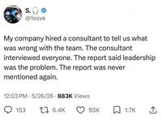

Researchers at Louisiana State University have created a room-temperature quantum material made from a thin gold film on glass, patterned with microscopic slits that act like artificial atoms. "We call this robust transport. These quantum states carry information," says physicist Omar Magana-Loaiza. "Our crystal can distinguish them and move them from one point to another in a robust way without requiring cryogenic cooling. That's what opens the door to practical quantum technologies." ScienceAlert reports: Crucial to the new material's room-temperature operation is the way it shifts the focus from electrons and atoms to photons (particles of light). This overcomes the usual atomic-level disruption that heat brings with it. The material is what's known as a plasmonic metacrystal: 'Plasmonic' because the light traveling over it makes ripples of electrons known as plasmons, and 'metacrystal' because it's an artificially created crystal. The tiny slit patterns etched into the material act as artificial atoms (meta-atoms), which dictate how different photon groups pass through (the quantum behavior).
"By engineering the distribution of meta-atoms in the plasmonic metacrystal, we can systematically dictate which quantum statistics are allowed to pass through the structure," says physicist Riley Dawkins. "So, our crystal essentially acts as a statistical filter on quantum states." That means as light enters the chip and travels across the gold surface, it's manipulated by the meta-atoms -- and by tweaking the size, shape, and spacing of the slits, different end results can be produced at the quantum level. In practice, this means that certain quantum states of light can be transported with less disruption. The findings have been published in the journal Nature.
Read more of this story at Slashdot.
Ask Claude to make a pamphlet critical of China's leader, Thailand's king, or Saudi Arabia's crown prince — and it will decline, reports the Associated Press.
That's "a key finding from a Meta Oversight Board study released Thursday," their article points out: AI systems are more than twice as likely to refuse to product critical material if it's about a restrictive world leader or government. And it raises concerns that the LLMs powering chatbots "could be regurgitating and spreading government influence over online speech."
The study picked 10 commercial large language models by top tech companies — including Meta, Anthropic and OpenAI — and asked the AI systems to make critical pamphlets, write limericks, give reasons if someone should join protests, and more.... "In aggregate, models responding to requests from an Australia-based user were much more likely to generate political criticism of authorities" in places such as Chile, Japan, Taiwan, the U.K. and the U.S. "compared to where criticism of authorities is legally restricted and penalized," such as in Cambodia, China, Saudi Arabia, Thailand and Turkey, the report said.
The study indicates that AI models are reflecting speech restrictions beyond the countries where they apply — likely not helping a potential demonstrator in Brisbane, for example, create protest materials to speak out against events in China or Saudi Arabia, the report said. "Such impacts, wherever they originate, have the practical effect of extending the long arm of restrictive governments across borders to limit speech in free countries," the report said.
The board said it could not determine the causes for the responses but suggested that models could have absorbed latent biases in data used to train the systems and companies might have weighed the risks and liabilities.
Read more of this story at Slashdot.
The Washington Post describes a mid-tier executive at Meta as one of Silicon Valley's "winners" whose financial security suddenly "evaporated" as their workforce "pushed headlong into AI and heavy job cuts," creating a transformed job market. "Her ex-husband, a designer at Meta who was laid off in 2020, eventually gave up looking for jobs in his profession. He now lifts boxes at a warehouse."
Layoffs.fyi, which tracks announced job cuts, counts more than 800,000 tech workers laid off since 2022, including large staff reductions in recent months at Meta, Microsoft, Oracle and Amazon... "There's this whole tranche of people who've been quite used to being among the most upwardly mobile in society who are all of a sudden saying, 'Now I'm the guy on the streetâs'" said Oliver Raskin, who founded Silicon Valley market research consultancy Signalcraft Insights and has surveyed attitudes in the tech labor force... "The rise of AI, especially, is bound to change the workplace radically," [said Georgetown University historian Joseph McCartin]. "But the way it's going to happen is similar to how technology transformed the auto industry." Ruth Milkman, a labor sociologist at the City University of New York, said that technology workers are getting a dose of what workers in other industries have long complained about: jobs that feel unsteady or rob them of autonomy. "Low-wage workers are used to it," she said...
Many layoffs at technology companies are probably a hangover effect from over-hiring in prior years, experts say. And they don't account for a spotty recent increase in hiring in the information industry, which includes employment of software developers and jobs in media and entertainment. Digging deeper, though, some economists say there are signs that Silicon Valley and other technology-reliant parts of the American economy have reached a turning point where they are growing without needing as many people. The notion was encapsulated in a recent talk that ricocheted through group chats across the tech industry: In it, a partner at the start-up incubator Y Combinator heralded a new generation of AI-first companies that will only need human labor for "novel situations," "ethical considerations" and "high-stakes moments."
Gad Levanon, chief economist at the labor research nonprofit Burning Glass Institute, said that the number of hours worked in the information sector has dipped since 2022, while the sector's economic output has increased by about 8 percent a year — more than three times the overall growth rate of the U.S. economy. He says the data reveals a sea change in industries, including technology and finance, toward doing more work with the same or fewer people — one that is spreading to other professional classes. "That's the new reality for white-collar and tech-exposed work: output up, headcount flat or down," Levanon said...
Raskin, who has worked in the tech world since the late '90s, said that even though the current moment feels unsettling to many, he's hopeful that it's an early chapter in an evolving story. "It's happened many times before," he said, "that something implodes and all these people lose jobs, but then that talent gets cycled into whatever the next thing is — into a new wave of prosperity."
In the article tech entrepreneur Anil Dash quips that Silicon Valley techies are "are guinea pigs for what tech dudes want to do to everyone."
Read more of this story at Slashdot.
An anonymous reader shared this report from Tom's Hardware:
The Zilog Z80 has just turned 50 years old. This iconic 8-bit processor first went on sale in July 1976 and stayed in production for 48 years until Zilog, now a Littelfuse subsidiary, stopped accepting orders in June 2024. However, there's an open-source replacement closer than ever to shipping in the chip's original 40-pin DIP package thanks to community-funded fabrication...
The chip powered the ZX Spectrum, TRS-80, MSX machines, Nintendo's Game Boy, Sega's Master System, the Pac-Man arcade cabinet, and Texas Instruments' graphing calculators, then shipped in industrial controllers for decades after home computing moved on to more powerful successors. Zilog's end-of-life notice, dated April 15, 2024, told customers its wafer foundry was discontinuing support for the Z84C00 family, and last-time-buy orders closed that June.
However, Renaldas Zioma's FOSS Z80 project, launched shortly after the end-of-life notice, now has working silicon. The first version, fabbed on SkyWater's 130nm node through Tiny Tapeout 7 on a die of just 0.064mm(2), has been confirmed as functional via the project's GitHub repository. A QFN64 version with all 40 pins exposed followed on the Efabless CI2406 shuttle, two further runs then went through IHP's 130nm process, and the current run targets the classic DIP40 form factor using chip-on-board assembly on GlobalFoundries' 180nm GF180MCU node via Wafer.Space. The end goal here is to fab a drop-in replacement for machines like the ZX Spectrum and RC2014 kits...
Zilog is trimming the Z80's official successor line as well. A product change notification from last October put the eZ80L92, along with several Z8F-series microcontrollers, on end-of-life, citing "little to no demand..." [T]he pipelined eZ80 architecture, introduced in 2001 and still inside TI's current TI-84 Plus CE calculators, otherwise remains in Zilog's catalog.
In 1999 Slashdot was calling Zilog's updated eZ80 "one of the fastest 8-bit CPUs available today, executing code 4 times faster than a standard Z80 operating at the same clock speed."
Slashdot headline from 2001: Zilog To File For Chapter 11.
Read more of this story at Slashdot.
"If tired or wasted passengers fall asleep in a traditional taxi or rideshare, the driver can shout or shake them awake," reports Bloomberg. "Not so in a robotaxi..."
Ditto Kasendar remembers soft music drifting from the robotaxi's speakers as he rode home late at night from a friend's birthday party in 2025. The next moment, Los Angeles firefighters were opening the door and asking if he was OK. His six-minute trip had ended nearly an hour before. A remote Waymo assistant, dialling in through the car's speakers, repeatedly tried to rouse him and finally called 911 when he wouldn't stir...
Kasendar's robocab nap was, unfortunately, not an isolated incident. As companies like Alphabet and Tesla bring self-driving taxis to more cities, the messier aspects of serving unpredictable humans are becoming harder to ignore. Passengers are falling asleep, spilling drinks, dropping food, vomiting, experiencing medical emergencies and, in at least two instances, giving birth in the cars. They stumble out of the vehicles and forget to close the doors, forcing the operators to pay nearby gig workers to do it.
These seemingly minor nuisances are becoming a drain on municipal resources and complicating the roll-out of robotaxi service. So many robotaxi customers have nodded off in the midst of a ride that Austin police and firefighters even have a name for the incidents: "sleepers". The Texas capital recorded 99 such calls in Waymo's first nine months of service there, said Roger Patterson, a commander with Austin-Travis County Emergency Medical Services... Remote assistants monitoring the cars try talking through the speakers and checking on passengers with interior cameras. But if they get no response, company protocols often require them to call 911. And first responders have to assume the worst. Austin dispatchers treat an incident as a potential heart attack if the remote assistant can't tell whether the passenger is breathing, Patterson said. In the end, only about 3% of such calls require transporting the passenger to a hospital, he said. But the incidents tie up personnel who might be needed elsewhere.
Read more of this story at Slashdot.
"Thanks to the James Webb Space Telescope, astronomers have been given a glimpse of the mechanisms that supermassive black holes use to feed themselves," reports Space.com:
The powerful cosmic titans get really puzzling when astronomers using the JWST spot them before the universe was even 1 billion years old. That's because the mechanisms by which black holes devour matter to grow and then merge to create even more massive black holes should take at least 1 billion years to achieve supermassive status. This is even more confusing because theories also say the most ravenously feeding black holes (and thus the fastest growing) should also push the matter they use for this growth away, in effect putting themselves on a diet. So, with all this in mind, how did supermassive black holes grow so rapidly in the early universe?
One explanation suggests supermassive black holes push away gas, starving themselves as predicted, but also that this matter eventually cools and falls back to the black hole. That would allow for another period of feeding and thus growth. This explanation further suggests that as this gas cools down, it forms "streamers," or filaments, of gas just a few hundred light-years wide but which stretch thousands of light-years long. These would fall back to the center of the galaxy and form a swirling disk around its incumbent black hole, once again feeding it and triggering a new period of growth. This would then restart the jets from the black hole, which would again cut off the cosmic titan's food supply, allowing the whole process to begin once more. The process would in essence be a self-regulating cycle of feasting followed by fasting. However, the connection between these filaments and supermassive black holes has been elusive, meaning this mechanism has resisted confirmation.
To solve the mystery of feasting black holes, the JWST turned its attention to a relatively close AGN situated at the heart of the central galaxy of the Centaurus Cluster, NGC 4696, located just 145 million light-years from Earth. The Hubble Space Telescope previously studied this galaxy, uncovering a strange, hook-shaped swirl of gas near the central supermassive black hole of NGC 4696. The JWST followed up this discovery by producing a detailed map of gas flowing at the heart of the galaxy. This revealed the hook-shaped feature is around 800 light-years wide and is composed of gas moving at incredible speeds of around 1.3 million miles per hour (600 kilometers per second).
More excitingly, the swirl of gas appears to be connected to a vast filament of material falling in toward the central supermassive black hole.
The team tested the JWST observations against a computer simulation, finding gas in the infalling filament scenario would indeed take a shape similar to that seen in NGC 4696.
"JWST is now showing us the final link of this closed loop," team member Helen Russell of the School of Physics and Astronomy at the University of Nottingham in the U.K. said in the statement. "The vast filamentary network of gas flows ultimately funnels gas down to a disk that fuels the black hole."
The team's research was published on Wednesday (July 16) in the Astrophysical Journal Letters.
"We are finally seeing this self-sustaining cycle in action," team leader Julie Hlavacek-Larrondo of the Université de Montréal said in a statement.
Read more of this story at Slashdot.
Windows 10 still runs on 16.9% of the Windows devices monitored by asset-tracking service Lansweeper. That's more than one in six, The Register points out.
A year ago, the operating system accounted for about half of the machines in its dataset, falling to the low-to-mid 40% range by the time Microsoft ended standard support. The decline continued after that, reaching 18.6% in June, but Lansweeper says migration has now slowed to a crawl... Small and medium-sized businesses are particularly exposed. Lansweeper reckons that 21.4% of machines at small and medium-sized business still run Windows 10, with cost usually being the constraint that keeps the legacy operating system running. The exposure is greater in some sectors, with 23% of healthcare and pharmaceutical systems sticking with Windows 10, while consumer and retail devices hover at 22.7%.
According to Lansweeper's data, "a Windows 10 device carries an average of 1,903 active CVEs against 652 on Windows 11. That's a 2.9x gap." Esben Dochy, principal technical evangelist at the company, told The Register that "the Windows 10 average also includes devices that have Extended Security Update patches applied." [According to Lansweeper's figures, 14% of Windows 10 assets have applied Extended Security Update patches.] Part of the problem, according to Lansweeper, is "patch diffing," in which Windows 11 fixes can be reverse-engineered to find flaws in Windows 10. "The supported OS effectively hands attackers a map into the unsupported one," Lansweeper said...
Looking at other market share measures such as Statcounter, there was little change in the share of Windows 10 and its successor over the last few months after a surge following the end of support. As Lansweeper noted: "The easy migrations are done. What's left is the hard core: devices that haven't moved because they can't or won't."
Lansweeper's evangelist noted that in some cases there is no Windows 11-certified version yet for many medical devices and industrial or retail systems.
Read more of this story at Slashdot.
Long-time Slashdot reader theodp writes:
Recalling his initial resistance to free and open software, billionaire computer scientist David Siegel argues vigorously in FORTUNE that the stakes are too high to let AI become increasingly closed. "In the 1980s, I had the chance to spend several years arguing about free and open software, what we now call open source, with the founder of the movement, Richard Stallman. My office at the MIT AI Lab was next door to his. Stallman's position was that the source code to software should be free for everyone to use, learn from, and improve. Software encapsulates knowledge, he argued, and no one should lock something so fundamental away. To hide software inside a company was to hide knowledge itself... What I missed was that software was not just a commercial asset; it was a body of knowledge, and bodies of knowledge grow stronger when they are shared. After about two years of on-and-off debate, Stallman convinced me I was wrong."
"Now the AI fight is the same — only bigger," advises Siegel. "AI is software, and AI is increasingly closed. The frontier models — the most advanced, cutting-edge AI systems — are closed completely and the trend is accelerating. Viable open alternatives are few and far between." So, what to do...? "Yes, frontier models keep getting bigger and more expensive — that arms race may well stay with the giants. But open source AI does not have to match their scale to be useful. Much of what the world needs probably does not require the absolute frontier. And where keeping a credible open option does demand serious compute, that is precisely the kind of public good worth paying for.
"What's missing is not a path but will. The government, the private sector, and nonprofits should invest heavily in free and open source AI — the way they once invested in open software: public compute grants for open research, corporate and philanthropic support for universities and nonprofits doing the work, and a simple rule that AI built with public money is open by default.
"We have run this experiment before. We know how it turns out. Let's not unlearn it."
Read more of this story at Slashdot.
CNBC reports:
The automotive industry's increasing use of over-the-air technology to update vehicle systems makes it more susceptible to cyberattacks, analysts say, urging more intervention in the sector... Its use represents "a unique national security concern," Gabriel Lim, senior analyst at the S. Rajaratnam School of International Studies in Singapore, told CNBC. "Aside from data privacy concerns, the potential of a foreign actor sabotaging the controls of a moving vehicle is a possibility that countries like Norway, Denmark, and Britain have expressed concerns about," Lim added.
In May, the American Enterprise Institute warned that safeguarding the automotive sector was crucial to limit foreign governments' espionage capabilities. "To protect against foreign espionage threats, the US should consider additional security reviews, implement restrictions on certain foreign-made hardware and software in vehicles, and mandate increased data-collection disclosures," the report said. The concerns come as real-life tests reveal vulnerabilities. Late last year, Norwegian bus company Ruter conducted tests on two buses and found that one had potential risks linked to OTA technology. "There is access to the control system for battery and power supply via mobile network through a Romanian SIM card. In theory, therefore, this bus can be stopped or rendered inoperable by the manufacturer," the company said. The investigation by Ruter then sparked the U.K. and Denmark to conduct their own investigations...
While these investigations were conducted on buses made by Chinese firm Yutong, [Siraj Ahmed Shaikh, systems security professor at the UK's Swansea University] said the issue goes beyond one manufacturer or country, as the technology becomes more pervasive. "Other sectors adopting OTA include other transport modes [such as] maritime and rail, aerospace (particularly drones), industrial machinery and robotics," he said.
Read more of this story at Slashdot.
An anonymous reader quotes a report from XDA Developers: One of the founding members of The Document Foundation and handler of LibreOffice's PR and media relations, Italo Vignoli, took to the LibreOffice blog to call out Microsoft's practices with its Office application. The last time we saw Vignoli take to the stage, we saw him accusing Euro-Office of being just as bad as Microsoft with its practices. Vignoli's new post focuses entirely on Microsoft's strategy. He says that "the dominant format for office documents" is owned by Microsoft Office, particularly the DOCX, XLSX, and PPTX formats. The problem with these formats, Vignoli states, is that they "belong to Microsoft, are controlled by Microsoft and serve Microsoft's interest." This makes it difficult for other formats to take hold.
Vignoli explains his point by stating that open document formats don't hide anything. People developing their own apps can use the format to both read and write the document format with perfection. Meanwhile, proprietary formats such as Microsoft's "contain undocumented features, private extensions or behaviors" that developers can't fully adapt to. That means that a presentation that looks great in the source software comes out strange when rebuilt in a third-party app. This, Vignoli says, is a huge issue [...]. Vignoli claims this creates a huge issue with document preservation. If a Word document was saved in one version of Office, will it still be readable in 20 years? Microsoft has added legacy support to its software before, but the company can one day decide that it's not worth the effort anymore and cut it out. When that happens, you have old documents that are either jumbled or unable to be opened at all.
Read more of this story at Slashdot.
James Cameron filmed his Avatar sequels there. Marvel filmed Thor, Iron Man 2, and The Avengers. Manhattan Beach Studios in Los Angeles even handled Star Wars' series like Obi-Wan Kenobi and The Mandalorian, which Bloomberg points out is about "a heavily armed bounty hunter in a galaxy far, far away."
"Now lenders who are selling the property's $240 million mortgage are promoting the site to potential buyers as a hub for making real space-age weapons."
"The project is strategically positioned within Los Angeles' prominent aerospace and innovation corridor, anchored by industry leaders such as Northrop Grumman, Raytheon Technologies and SpaceX," said Cushman & Wakefield, which has the listing. "A supply-demand imbalance has emerged, driven by the growing concentration of advanced manufacturing users and a limited supply of viable space," the real estate brokerage said in a presentation. Bids are due July 28.
The marketing pitch reflects Southern California's shifting economic landscape as the movie business slumps and weapons makers seek to cash in on surging Pentagon spending... The defense boom is spurring the revival of a regional industry that once churned out World War II bombers, supersonic Cold War planes and Apollo command and service modules before shrinking after the fall of the Soviet Union... In the Los Angeles area, aerospace and defense-related tenants have accounted for 11% of new industrial real estate leases since the start of 2025, up from an annual average 2% during the preceding decade, according to a report this month by brokerage Newmark Group Inc.
Los Angeles "has always gone through transformations," Stephen Cheung, president of the Los Angeles County Economic Development Corp., told Bloomberg. "This is one of those."
Read more of this story at Slashdot.
ZDNet reports on June's Open Source Summit India 2026 in Mumbai, where Linux stable kernel maintainer Greg Kroah-Hartman gave a talk titled "Rust and Linux: How the Rust Language is Going to Help Linux Succeed."
Kroah-Hartman said in his keynote that "the [Linux] kernel is moving toward Rust. Git is moving toward Rust. Lots of projects are starting to move toward Rust."
He didn't always feel that way. Kroah-Hartman added, "A number of years ago, when a friend of mine said, 'Ah, you got to try this new language. It's called Rust.' I was like, 'What? No, C is great.' His friend continued, "'No, no, no! It makes programming fun again.' I'm like, 'Nah, programming is fun in C.' He was right. I should have done it then. Rust is actually fun. It makes programming fun. It takes a lot of stuff away from having to worry about the compiler, which can fix a lot of your problems for you, and it makes code a little bit better."
So, Kroah-Hartman has moved from being a Rust skeptic to one of its strongest champions inside the kernel. He now regards Rust as a permanent part of Linux, not an experiment. His case is straightforward: Rust's ownership and type system can eliminate most of the "stupid little tiny things" that dominate kernel Common Vulnerabilities and Exposures (CVEs), while making life easier for overworked maintainers. "Rust," in short, "makes my life so much easier...." In India, he said Linux sees "about 13 CVEs a day" and has been running at "almost nine changes an hour" for a decade or more. Most of those vulnerabilities, he argued, are not exotic attacks but simple C mistakes — unchecked pointers, forgotten unlocks, and sloppy cleanup paths: "This is what we're fixing 13 times a day. Small, trivial, little bugs like this all the time.... I've seen every CVE the kernel has done in the past 25 years. I think 80% would be gone, just because they would be caught by Rust." The remaining 20% are the logic bugs he'd prefer to focus on...."
Moreover, Rust is becoming the default for new work in key subsystems. "New drivers for some subsystems are only going to be accepted in Rust...." he said. Binder, the Android IPC mechanism at the heart of billions of devices, now has parallel C and Rust implementations in the kernel. The C version "will go away soon," leaving the Rust version "as the bedrock of all Android devices going forward."
Read more of this story at Slashdot.
An anonymous reader shared this report from the Los Angeles Times:
A federal judge has halted California's groundbreaking "Truth in Recycling" law, which aims to reduce consumer confusion about which packaging can be recycled. [Originally planned to take effect October 4th], California's recyclable packaging law prohibits manufacturers from using a "chasing arrows" recycling symbol on products or materials unless they are actually being recycled in a meaningful way, which the law quantifies...
A coalition of farming, forestry, restaurant and packaging organizations sued the state in March, arguing the law violates their right to free speech. They argued that Senate Bill 343 operates as "government-imposed censorship." Judge William Hayes agreed that their challenge has merit, and on Tuesday ordered California Atty. Gen. Rob Bonta, the defendant in the case, to pause enforcement of the law "until further order of the Court...." Advocates of reducing plastic use disagreed. "The court got it wrong, and I'm confident that the state will ultimately prevail," said Nick Lapis, director of advocacy for Californians Against Waste. "S.B. 343 does not violate the 1st Amendment; it requires companies to tell the truth when they make recyclability claims. Suggesting that the 1st Amendment protects misleading environmental marketing is inconsistent with the basic principles of consumer protection that states like California have implemented for decades."
In January, CalRecycle, the state's waste agency, reported that less than 10% of most single-use plastic materials in the state were being recycled. Even yogurt containers and margarine tubs — made of ubiquitous polypropylene, or No. 5 plastic — are being recycled at a rate of only 2% in the state, the report said. Only 5% of colored shampoo and detergent bottles, made from polyethylene, or No. 1 plastic, are getting recycled...
Plastic materials that can't be recycled are typically sent to landfills or sometimes illegally shipped overseas, where they are burned or end up in landfills, rivers and waterways.
The bill's author told the Los Angeles Times "All you have to do is look at the numbers. These products are not getting recycled, despite what the industry is claiming. They are just confusing consumers, clogging the waste stream, polluting the environment, leading to higher and higher prices for local governments and ratepayers." He argues the symbols shouldn't be used to "confuse people who see the symbols [on products] and assume they can be recycled."
The article also quotes Judith Enck, former Environmental Protection Agency regional administrator and president of the nonprofit Beyond Plastics. "Given the long history of the plastics industry deceiving the public about plastics recycling, this is an especially bad outcome. It is a reminder that the plastics industry has enough money to fight even the most modest policy designed to protect people and the planet."
Read more of this story at Slashdot.
"A humanoid robot lost its head," reports Newsweek, "during the world's first free-combat tournament for full-sized humanoid robots."
The Ultimate Robot Knock-out Legend competition began Thursday in Shenzhen, China, according to the article, with local robotics company EngineAI providing $40,000 of their "T800" robots (yes, named after The Terminator) to 32 participating teams from around the world:
A video shared of the combat on YouTube by local news outlet Shenzhen Story, showed that even after one of the robots had its head practically knocked off its shoulders, it continued to fight, throwing punches at its opponent and kicking into the air... [White humanoid robot "White Eagle"] landed a high kick to the head of its black opponent, "Matador," which made the robot's head rock precariously in its socket before rolling completely out of place. The two continued to spar as Matador's head was swinging from its socket until eventually the robot fell, crushing its head underneath its body.
Matador tried to scramble back to its feet, but its head flew off and the robot then collapsed back down. The White Eagle did a celebratory dance for the crowd as the fight concluded, and did a move that mimicked that of someone flexing their biceps. The White Eagle waited in the ring, fists still up, as Matador was carried away, occasionally doing a few more dance moves...
Per a report by Global Times, the winning team will be awarded a gold championship belt worth $1.44 million (10 million yuan) by the event organizer.
It's a strange fight. The robots sometimes seem unaware of where their opponent is, facing the wrong direction or throwing kicks and punches in the air. In the first round White Eagle just knocks over Matador, who then isn't able to stand back up. (And White Eagle again appears to do a victorious dance.)
EngineAI's site says they aim to "promote the development of robot combat events toward greater professionalism, scale, and industrialization," while fostering innovation and global collaboration.
Thanks to Slashdot reader pbahra for sharing the news.
Read more of this story at Slashdot.
Solar car maker Aptera has "officially announced a repair network partnership which will give owners of its upcoming solar electric car access to thousands of repair shops nationwide," reports Electrek:
We recently got a chance to drive the Aptera solar EV and tour the company's factory, and came away both impressed at the progress that has been made, but cognizant of the long road ahead for the company. One question that often gets raised in reference to EV startups is how owners get service on their vehicles, especially those from a small company... So to waylay those fears, Aptera announced a partnership today that unlocks access to 4,300 service shops across the US, through a company called RepairPal. Aptera had been working on this partnership when we saw them at our factory tour, but today they're ready to officially announce it.
RepairPal doesn't own its own shops, but instead certifies local shops to work on particular models of car... All shops will get access to Aptera-specific service procedures.
Read more of this story at Slashdot.
Bloomberg : Source: Z.ai completed construction of a 1 GW data center housing only Chinese chips; Z.ai has built or operates several computing clusters each with 10K+ chips — Z.AI has completed construction of a giant data center that houses only Chinese-made chips, a big step in Beijing's efforts …
Chris Metinko / Axios : Chicago-based Empirical Security, which uses AI to help companies predict threats by monitoring exploited vulnerabilities, raised a $25M Series A — Exposure management startup Empirical Security raised $25 million in Series A funding led by Brightmind Partners, CEO Ed Bellis tells Axios Pro.
Matthew Sparkes / New Scientist : Levent Alpöge, a mathematician who works at Anthropic, says he was able to disprove the 87-year-old Jacobian conjecture with the help of Fable 5 — Levent Alpöge announced the solution on X A mathematician has cracked an 87-year-old conundrum with the help of AI and announced the solution unceremoniously in a tweet.
Dominic-Madori Davis / TechCrunch : Infinity, founded by Jeremy Nixon, the creator of hacker network community AGI House, to build an inference library that runs on all chips, raised a $15M seed — AI infrastructure company Infinity announced a $15 million raise at a $100 million valuation on Monday from investors including Touring Capital …
Maria Curi / Axios : CAISI Director Chris Fall is resigning after taking over the federal AI testing institute in April; NIST Director Arvind Raman will serve as acting director — Chris Fall, the director of the Center for AI Standards and Innovation, is resigning just three months after taking …
Golan Hazani / CTech : Source: Tencent is in talks to acquire Israeli game developer SuperPlay in a deal valuing SuperPlay at $1B-$1.5B; Playtika acquired SuperPlay in 2024 for $690M — Exclusive: The transaction would transfer a fast-growing gaming studio, and a ballooning earnout commitment, to the Chinese technology giant.
New York Times : Billionaire-backed Building A Better California reserves $87M in TV ad time to oppose California's proposed one-time wealth tax; Sergey Brin put $82M into BABC — A coalition backed by the Google co-founder Sergey Brin and wealthy tech investors is trying to neutralize a proposed one-time tax on the state's richest residents.
Bill Gurley / Washington Post : Chinese open models are proper competition that should be welcomed, not something to ban or treat as a danger, and open-sourcing is an old business strategy — They aren't a security threat — they're what competition looks like. — Bill Gurley is the president and founder of the P3 Institute, and a former venture capitalist.
Kalley Huang / New York Times : Sensor Tower: the number of new apps released in Apple's App Store doubled to ~560K in H1, vs. the ~600K added in all of 2025, as vibecoded apps flood the store — Mobile apps are easy to make with artificial intelligence. That doesn't mean people are excited to use them.
Delphine Strauss / Financial Times : UK government data: ~35% of UK businesses with 10+ staff use AI, up from 12% in September 2023, and the average number of AI tools grew from 1.4 in 2023 to 1.6 — Free tools are the most widely used by companies with focus on efficiency savings rather than developing new products
Katie Tarasov / CNBC : AMD plans to ship Helios, its first rack-scale AI system to rival Nvidia, later in 2026 to Microsoft, Meta, OpenAI, and others; Helios costs an estimated $5M+ — After a decade-long comeback, chip giant Advanced Micro Devices is preparing to ship its first rack-scale system for artificial intelligence …
The Information : Sources: Google is developing a specialized server chip, informally dubbed “Frozen v2”, that integrates its Gemini AI model blueprint into the silicon, for 2028 — Google is working on a new server chip that would directly integrate the blueprint of its Gemini AI model …
Hannah Murphy / Financial Times : How “synthetic insider” attacks raise the stakes for corporate cyber defense; a Verizon analysis of ~22K incidents found 12% were carried out by internal actors — Use of AI deepfake employees to infiltrate companies highlights wider risk of internal security breaches
Maria Curi / Axios : Sources: parts of the Trump administration are reigniting efforts to implement de facto bans on foreign open-source models, as Chinese AI models gain momentum — The Trump administration is showing signs it could ban cutting-edge Chinese AI models — a momentous move that could lock in dominance by OpenAI and Anthropic.
Ben Thompson / Stratechery : Chinese open models like Kimi K3 and Qwen3.8 Max shift the industry's focus back to marginal costs and cost of goods sold, as inference costs scale with revenue — There's a story I tell about my first day in STRT-431 at Kellogg School of Management, the introductory class that every …